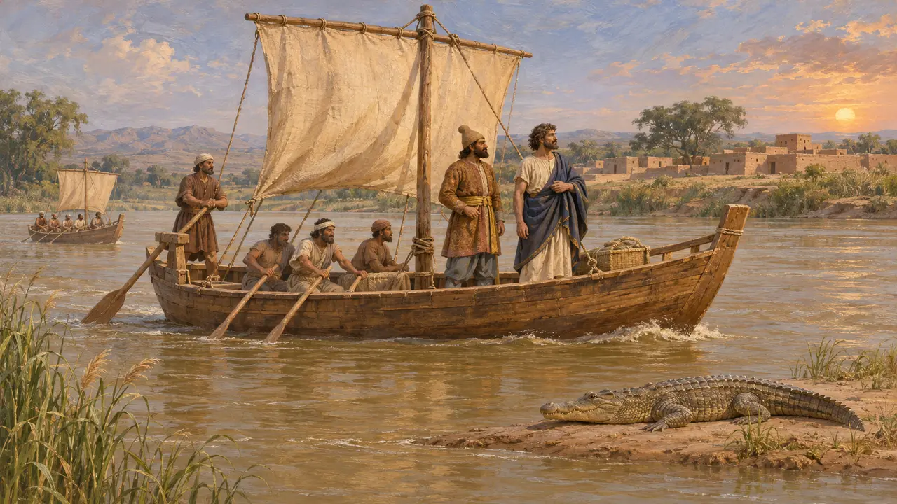
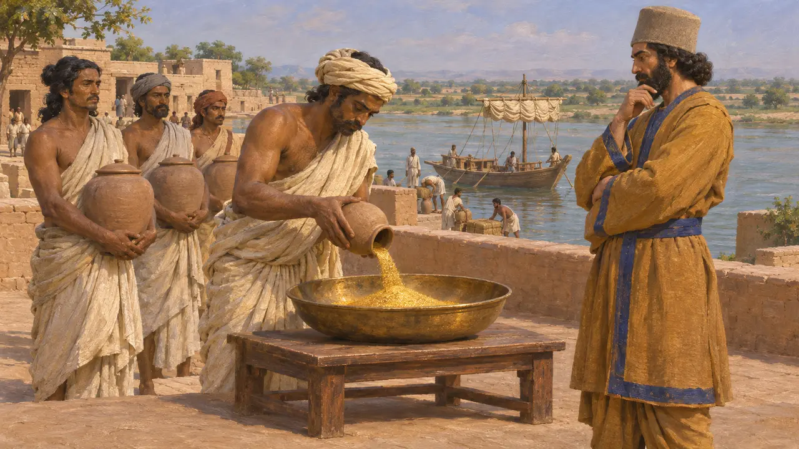
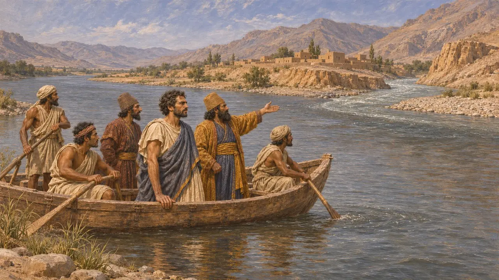
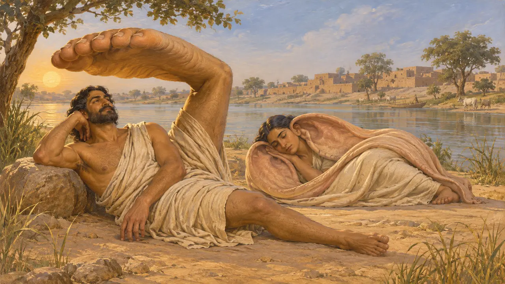

Энциклопедия › Битвы и события

Плавание Скилака
Персидское плавание-разведка вниз по Инду и на запад, в Египет, около 517 г. до н. э.
В игре: Уровень 5: Хартия
Геродот сообщает, что Дарий отправил Скилака Кариандского, карийца, с другими людьми, которым он доверял, выяснить, где Инд впадает в море. Они спустились по реке, затем поплыли на запад морем, вероятно вокруг Аравии, и на 30-й месяц достигли египетского берега Красного моря. Это плавание связало дальний восток державы с её западными морями, и после него Геродот помещает завоевание Дарием индийцев.
В игре: Игра показывает плавание как событие летописи около 517 года до н. э., следуя Геродоту 4.44. Дата — современная оценка, поскольку Геродот её не приводит, а порядок «сначала плавание, затем завоевание» — его версия, а не достоверный факт.

Что рассказывает Геродот
Античное свидетельствоГеродот сообщает, что Дарий хотел узнать, где Инд, река с крокодилами, впадает в море. Он отправил корабли со Скилаком Кариандским и другими людьми, которым доверял. Они отплыли от города Каспатира в земле пактиков и спустились по течению к морю. Затем они повернули на запад через море и на 30-й месяц достигли места, откуда некогда египетский царь отправил финикийцев в плавание вокруг Ливии.
Herodotus 4.44

Завоевание и дань в Индии
Античное свидетельствоГеродот добавляет, что после плавания Дарий покорил индийцев и стал пользоваться южным морем. В своём перечне податных областей он называет индийцев самым многочисленным из известных ему народов. По его словам, они платили самую большую дань: 360 талантов золотого песка. Историки признают, что земли Инда были богаты, но к его точным цифрам относятся с осторожностью.
Herodotus 4.44; Herodotus 3.94
Индия в персидских источниках
Свидетельства эпохиБехистунская надпись перечисляет Гандхару среди земель Дария, но не Индию. Хиндуш, область нижнего Инда, появляется в более поздних царских перечнях, в том числе в надписи на гробнице Дария в Накше-Рустам. Персепольские фортификационные таблички, написанные спустя несколько лет после плавания, фиксируют путевые пайки для отрядов, двигавшихся между Персидой и Хиндушем. Они показывают, что путешествия по этому маршруту организовывало государство.
DB §6; DNa; Persepolis Fortification tablets

Сомнения в маршруте и порядке
СпорныйГеродот пишет, что река текла на восток, а это лучше подходит к реке Кабул, впадающей в Инд, чем к самому Инду, так что его география, возможно, смешивает их. Некоторые историки полагают, что земли Инда были захвачены до этого плавания, и тогда оно было разведкой покорённой страны, а не прелюдией к завоеванию. Другие связывают его с планами Дария проложить морской путь в Египет через его канал от Нила.
P. Briant, From Cyrus to Alexander, 2002; K. Karttunen, India in Early Greek Literature, 1989

Книга Скилака и её чудеса
Позднейшая легендаСкилак, по-видимому, написал рассказ о своих путешествиях, ныне утраченный. Аристотель трезво ссылается на него в связи с индийскими царями. Гораздо позднее византийский учёный Цец приписал ему рассказы о диковинных народах — например, о людях, которые укрывались в тени одной огромной стопы или спали, завернувшись в собственные уши. Эти чудесные истории проверить невозможно. Сохранившийся путеводитель по побережьям, носящий его имя, на самом деле составлен гораздо позже.
Aristotle, Politics 7.14; Tzetzes, Chiliades
Источники
- Herodotus 4.44
- Herodotus 3.94
- DNa
- Aristotle, Politics 7.14
- P. Briant, From Cyrus to Alexander, 2002
- K. Karttunen, India in Early Greek Literature, 1989